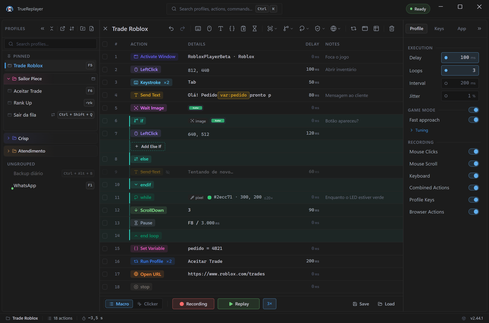

Tudo o que o app faz, do primeiro clique gravado à automação que roda sozinha: gravação, perfis, tokens, condicionais, clicker, navegador, data loop. Cada parte começa fácil e aprofunda — leia em ordem ou pule direto para o que precisa.
O sumário lateral acompanha a leitura. / ou Ctrl+K abre a busca — igual à paleta do app. Passe o mouse num título para copiar o link daquela seção.
As 15 partes
O TrueReplayer grava o que você faz — cliques, teclas, texto — e repete quando você mandar. Quatro palavras resolvem quase todo o vocabulário do app:
| Termo | O que é |
|---|---|
| Perfil | Uma macro: a lista de ações + suas configurações. Um arquivo .json. |
| Ação | Um passo (um clique, uma tecla, um If…). Uma linha na grade. |
| Pasta | Grupo colorido de perfis. Um perfil fica em no máximo uma. |
| Macro / Clicker | Dois modos: Macro grava e reproduz listas de ações; Clicker é um auto-clicker. Alterne com ScrLk. |

A maioria das macros úteis tem uma ou duas ações.
Um Send Text com a resposta pronta. Um clique que se repete. Não ache que precisa gravar algo longo para valer a pena — as macros que você vai usar vinte vezes por dia são as curtas.
Onde os passos entram: com linhas selecionadas na grade, a gravação insere antes da primeira selecionada; sem seleção, acrescenta no fim. (Se um passo gravado "foi parar no lugar errado", quase sempre é isso.)
Em Settings → Profile → Recording você escolhe o que a gravação escuta. Tudo ligado por padrão:
| Opção | Efeito |
|---|---|
| Mouse Clicks | Cliques esquerdo/direito/meio e duplos. |
| Mouse Scroll | Roda do mouse. |
| Keyboard | Teclas e modificadores. |
| Combined Actions | Ligado → Ctrl+C vira uma linha só. Desligado → linhas KeyDown/KeyUp separadas — necessário para gravar arrastar ou segurar tecla. |
Ctrl+PgDn (ou Replay) executa. O mesmo atalho (ou Stop) interrompe na hora — soltando qualquer tecla que a macro estivesse segurando.
A reprodução agenda cada ação contra um prazo, não empilha esperas: se algo atrasar, ela ressincroniza em vez de disparar uma rajada de ações acumuladas. Depois de ações que esperam por natureza (Wait Image, Pause, Run Profile, ações de navegador, If com espera), o relógio também ressincroniza — um delay colocado como acomodação nunca é comprimido.
| Configuração | O que faz | Padrão |
|---|---|---|
| Delay | Atraso fixo antes de cada ação, contado do início da anterior (ação de 30 ms + delay 100 ms → a próxima começa em 100 ms, não em 130). | 100 ms |
| Loops | Repetições da macro inteira, 1 a 999. Pertence ao perfil e viaja no export. | 1 |
| Interval | Pausa entre uma repetição e a seguinte. Também é do perfil. | desligado |
| Jitter | Variação aleatória de ± % em cada delay. | desligado |
Não existe "0 = infinito".
O mínimo de Loops é 1. Para rodar até você mandar parar, use os modos de disparo While Pressed ou Toggle na hotkey (Parte 3).
A pílula de loop na barra mostra o que a próxima execução fará: 3×, por linha (Data Loop) ou ∞. Contorno tracejado âmbar = você mexeu nas configurações e ainda não salvou.
A grade tem as colunas caixa · Action · Details · Delay · Notes. Cada linha é uma ação; a caixa desmarcada pula a linha sem apagá-la.
| Tarefa | Como |
|---|---|
| Selecionar | Clique · Ctrl+clique alterna · Shift+clique estende o intervalo. |
| Editar na linha | Clique na célula Delay ou Notes e escreva ali mesmo: Enter confirma, Esc cancela. As demais células não abrem editor — clicar nelas seleciona a linha. |
| Reordenar | Arraste, ou Alt+↑ / Alt+↓. |
| Pular uma linha | Desmarque a caixa — fica na lista, não roda. |
| Editar em massa | Com várias selecionadas: Set delay, Set X/Y, Set notes, Move, Skip, Delete. |
| Formulário completo | Passe o mouse na linha e clique no lápis que aparece na borda direita — abre o painel lateral com todos os campos da ação. O mesmo painel abre com Enter (linha selecionada, foco na grade) ou por botão direito → Edit. Durante um run os três caminhos somem juntos: o lápis deixa de ser desenhado e o menu de botão direito não abre (a partir da versão 2.38.0). |
Botão direito numa linha: Edit · Pick from screen · Duplicate · More · Delete.
| Ação | O que faz |
|---|---|
| Left / Right / Middle Click | Um clique em (x, y) — ou N cliques com intervalo, Gap jitter e Position jitter. |
| Double Click | Dois cliques abaixo do limiar do sistema, para o app ler como duplo de verdade. Aceita × N. |
| Triple Click | Três cliques encadeados do mesmo jeito — o app lê como triplo de verdade (selecionar um parágrafo). Duas ações Double Click seguidas não fazem isso. Aceita × N. |
| Keystroke | Uma tecla ou combinação — ou N vezes com intervalo e Gap jitter. |
| Hold Key | Segura uma tecla por N ms (padrão 1000). Modificadores são descartados. |
| Key Down / Key Up | Pressionar ou soltar isolado — para arrastar ou segurar tecla. |
| Scroll Up / Down | Um passo da roda, na posição do cursor. |
| Send Text | Injeta texto com tokens — Parte 4. |
| Set Variable | Guarda um valor, lido com {var:nome} — Parte 5. |
| Copy to Slot | Copia a seleção atual para um slot, lido com {clip:nome} — Parte 5. |
| Pause | Para até uma hotkey de retomada ou um timeout — Parte 7. |
| Wait Image / Wait Pixel Color | Esperam a tela ficar pronta — Parte 7. |
| Run Profile | Executa outro perfil como subpasso. Ciclos e mais de 5 níveis são bloqueados. |
| Activate Window | Activate / Maximize / Minimize / Close noutra janela — Parte 8. |
| If / Else If / Else / EndIf · Assert | Blocos condicionais e exigências — Parte 6. |
| While / End Loop · Break / Next | Bloco que repete enquanto a condição vale, e os saltos de controle — Parte 6. |
| For Each Data Row | Repete só um trecho, uma vez por linha da tabela — Parte 12. |
| Stop · Return | Encerram no meio: a execução inteira, ou só o passe atual — Parte 6. |
| Browser actions | Click / Type / Navigate / Wait / Assert / Select no Chrome — Parte 11. |
Keystroke e os cliques repetem na própria linha, sem precisar de loop:
Quando usar jitter.
Click × 3 com Gap + Position jitter parece humano — é o que serve em jogos, onde repetir o mesmo pixel no mesmo ritmo é o sinal mais óbvio de macro. Para automação comum (um botão, um campo), deixe desligado: ali você quer o pixel exato.
Todo clique guarda uma coordenada. Quando o alvo só é conhecido na hora de rodar, o campo Position do formulário troca isso:
Serve quando o passo anterior já deixou o mouse no lugar certo, ou quando é você quem posiciona antes de disparar. Vale para Left, Right, Middle, Double e Triple Click.
O cursor precisa estar onde você acha que está.
Um clique At cursor obedece ao mouse no milissegundo em que a linha roda. Se a macro leva alguns segundos até ali e você mexeu o mouse nesse meio-tempo, ele clica no lugar novo. Para um alvo fixo, use This point.
.trprofile com ações, metadados, imagens e layout. Na importação nada é sobrescrito em silêncio: cada conflito de nome recebe Rename (padrão), Overwrite ou Skip. Um perfil que exige um TrueReplayer mais novo que o seu aparece esmaecido, com o motivo..cp) que roda o perfil ao terminar de ser escrita.| Modo de gatilho | Comportamento |
|---|---|
| On Press | Uma vez, ao pressionar. |
| On Release | Uma vez, ao soltar. |
| While Pressed | Repete enquanto a tecla estiver segurada; para ao soltar. |
| Toggle | Primeiro toque inicia, segundo para. |
| Double-tap | Dois toques rápidos (~0,4 s). Toque único não faz nada. |
| Hold | Uma vez após segurar ~0,6 s. Não para ao soltar. |
Os modos valem só para hotkeys — uma hotstring não tem modo: dispara ao terminar de ser escrita, e pronto. Em modo Clicker nada disso chega a disparar, nem hotkey nem hotstring, porque o modo não executa perfis; a tecla passa adiante para o app que está na frente (a partir da versão 2.38.0), em vez de sumir sem executar nada — o quadro completo está na Parte 10.
Settings → Keys → Key Remaps: uma camada 1:1 que não depende do perfil ativo. CapsLock → Esc vale no sistema inteiro enquanto o app roda; mapear uma tecla "para nada" a desativa. O alvo também pode ser um botão do mouse ou um tique da roda — clique esquerdo, do meio, direito, os dois laterais, Scroll up e Scroll down, no menu ao lado do chip de destino — e cada remap pode valer só quando um aplicativo estiver em frente (Only in, com a lista dos processos em execução). Um remap com escopo vence o remap global da mesma tecla; uma tecla cujos remaps são todos de outros aplicativos passa intacta. Clicar numa linha edita no lugar, o ponto liga e desliga, e o limite é 32.
Origem e alvo são uma tecla: combinações não entram. Os nomes seguem a grafia do keycap (PgDn, Esc, Caps); os botões do mouse aparecem como Left, Middle, Right, Side 1, Side 2, Scroll ↑ e Scroll ↓. Alt como origem vale para os dois Alt — exceto em teclado com AltGr, onde vale só o esquerdo; para o AltGr use RightAlt.
Quando a origem também é uma hotkey — global ou de perfil, inclusive dentro de uma combinação como Ctrl+F5 — a hotkey deixa de disparar: o remap vem antes, e a interface avisa antes de salvar. Quando o alvo é uma hotkey, acontece o contrário: a tecla remapeada dispara a hotkey em vez de digitá-la (botão lateral → F9 com F9 = Replay inicia o Replay). Se o alvo é um botão do mouse que serve de hotkey a um perfil, o clique remapeado não a dispara — entrada injetada não conta para hotkeys.
A camada pausa durante a gravação (o gravador vê a tecla física) e enquanto Profile Keys estiverem desligadas: a hotkey de pausa é o "modo digitar normal" do app, e os remaps entram nele. O menu da bandeja tem o interruptor Enable Key Remaps, alcançável só com o mouse, para o remap que tornou o teclado inutilizável.
Os remaps ficam em Documents\TrueReplayer\remaps.json, com backup em remaps.bak.json. Se o arquivo não puder ser lido, o app mostra o backup, grava as edições em remaps.pending.json e não sobrescreve nada até você clicar em Replace remaps.json no aviso da seção. Os dois ícones ao lado de Add remap exportam a lista e importam um arquivo somando ao que já existe — um remaps.json copiado de outra máquina serve.
O que não tem botão próprio mora aqui, em quatro grupos. Actions: Copy as Table / Paste Actions (mover passos entre perfis) e as quatro reescritas em lote — Convert Coordinates to Relative / Absolute e Convert Actions to Combined / Paired. Profiles: Reset Profile, Duplicate Profile e Edit Profile Info. Diagnostics: Toggle Live Variables, Run Report, Reload UI, Open Logs Folder e Copy Diagnostics. Help: Open Manual. Importar e exportar perfis não está na paleta — é um ícone no painel Profiles —, e o Theme Editor abre em Settings → App → Interface → Theme & layout → Customize.
A ação Send Text injeta texto por colagem — layouts e acentos sobrevivem. E dentro do texto entram tokens: palavras entre chaves, como {date} ou {clipboard}, que na hora de executar são trocadas pelo valor real daquele momento.
Você não precisa decorar nada: o editor Insert Text mostra uma paleta de chips (Clipboard · Values · Keys & timing · Run state) — clicar insere o token pronto. Prefere o teclado? Digite { no texto: abre a lista dos mesmos tokens, filtrada pelo que vier depois (d → Date, DateTime, Delay); Enter ou Tab insere o chip, Esc fecha e deixa a chave como texto. Confirme com Ctrl+Enter; o Enter sozinho só pula linha.
| Token | Vira | Exemplo de saída |
|---|---|---|
| {date} | Data de hoje | 21/08/2026 |
| {time} | Hora atual | 14:35:07 |
| {datetime} | Data e hora | 21/08/2026 - 14:35:07 |
| {date:+7:yyyy-MM-dd} | Daqui a 7 dias, no formato que você pedir | 2026-08-28 |
| {timestamp} | Unix time — segundos desde 1970 (UTC); {timestamp:ms} em milissegundos | 1787333707 |
| {random:1-10} | Número aleatório entre 1 e 10 (incluindo as pontas) | 7 |
Deslocar e formatar: os três tokens de relógio aceitam argumentos. Um deslocamento é um número com sinal e uma unidade — {date:+7} (dias, a unidade padrão), {date:-1mo} (meses; w semanas, y anos, h horas, min minutos) — e o que sobrar é o formato, no padrão do .NET: {date:yyyy-MM-dd}, {time:HH:mm}, {datetime:+1:dd/MM/yyyy HH:mm}, {date:D} (data por extenso). Maiúsculas importam: MM é mês, mm é minuto. Nomes de mês e dia seguem o idioma do Windows; / e : saem como estão. Um formato que o .NET não aceita deixa o token como texto. Clique no chip para montar tudo sem decorar nada.
Cada {random:a-b} sorteia por conta própria: {random:1-6} {random:1-6} são dois dados, não o mesmo número duas vezes.
O irmão do {random} para frases inteiras: digita uma das opções, sorteada a cada uso.
|. Cada ocorrência sorteia por conta própria (dois {pick} no mesmo texto podem sair diferentes), e num texto com formatação as versões simples e rica recebem a mesma escolha. É o que tira a cara de robô de uma saudação de atendimento.Alguns tokens não viram texto — viram tecla pressionada:
| Token | Tecla | Token | Tecla |
|---|---|---|---|
| {enter} | Enter | {home} / {end} | Home / End |
| {tab} | Tab | {pageup} / {pagedown} | PgUp / PgDn |
| {space} | Espaço | {up} {down} | Setas ↑ ↓ |
| {backspace} / {delete} | Backspace / Del | {left} {right} | Setas ← → |
| {escape} (ou {esc}) | Esc | {delay:500} | Pausa de 500 ms na digitação |
No Browser Type quem pressiona as teclas é a extensão do Chrome, e desde a versão 1.4.18 ela entende a mesma gramática do Send Text: todas as teclas acima, a repetição ({tab:2}) e a pausa ({delay:500}). Como uma tecla sintética não tem o efeito natural no navegador, a extensão o aplica por conta própria — {tab} move o foco para o próximo campo, {space} digita um espaço (ou aciona um botão), {home} e {end} levam o cursor ao começo ou ao fim do campo e o texto seguinte entra ali, {pageup} e {pagedown} rolam a página — a menos que o próprio site cancele a tecla, como faria com um teclado de verdade. Duas teclas têm regra à parte, porque o efeito delas depende de onde o foco está: o {enter} nem sempre envia o formulário, e {backspace} e {delete} só apagam um caractere quando o foco está num campo de texto (extensão 1.4.21) — as duas regras estão no aviso logo depois deste parágrafo. Uma diferença continua: ao contrário do Send Text, um {enter} que venha dentro do conteúdo copiado vira tecla ali, porque quem lê o texto final é a extensão. Se o app avisar que a versão da extensão não bate, recarregue-a em chrome://extensions — e depois dê Ctrl+R nas abas que já estavam abertas, porque a extensão recarregada só volta a alcançar uma página depois que essa página recarrega.
No Browser Type, o Enter e as teclas de apagar seguem o foco. A extensão nunca faz mais do que a tecla de verdade faria no elemento em foco — e, num caso, faz menos. Por isso o resultado das duas depende de onde o {tab}, ou o seletor da ação, deixou o foco. As regras abaixo são da extensão 1.4.21 (a partir da versão 2.38.0); o número instalado aparece em chrome://extensions.
O Enter nem sempre envia o formulário. Com o foco num botão, ele pressiona esse botão — é assim que o botão de enviar dispara o envio; num link, abre o link; num campo de uma linha que pertence a um formulário da página, envia esse formulário. Fora desses casos ele só anuncia a tecla e deixa a página decidir: é o que acontece num campo de várias linhas — mesmo dentro de um formulário, porque um Enter de verdade ali também não envia —, num editor rico, a caixa de mensagem de um chat, e num campo solto, que não faz parte de formulário nenhum. Aí a extensão não envia nada por conta própria e também não escreve quebra de linha: a maioria dos chats trata o Enter sozinha e a mensagem vai; quando a página ignora a tecla, não acontece nada e a ação termina em verde do mesmo jeito. Para garantir o envio, ponha um Browser Click logo depois do Browser Type, mirando o botão pelo texto visível (text=Enviar): é explícito, aparece no Run Report e não depende de a página tratar a tecla. E se o que você queria era só quebrar a linha num campo de várias linhas, escreva a quebra no próprio texto da ação — ela viaja no texto, não no {enter}.
Backspace e Delete só apagam onde cabe texto. Eles agem na caixa de digitação comum (inclusive as de senha, busca, e-mail, endereço de site e telefone), na caixa de várias linhas e na área de escrita rica — o teste prático é o cursor: se você clica ali e aparece a barrinha piscando, as teclas apagam. Em qualquer outro alvo (botão, caixa de marcação, lista suspensa, controle deslizante, seletor de cor, campo de escolher arquivo, ou um pedaço qualquer da página) a tecla continua sendo anunciada ao site — um atalho da própria página pode reagir a ela —, mas nada é apagado; e um passo só de teclas ainda termina em verde: o erro só aparece quando o mesmo passo também tem texto a digitar. Isso é proposital: antes a extensão escrevia em qualquer coisa que tivesse um valor por trás, e um {backspace} mirado num controle deslizante marcado em 50 deixava-o em 5 — dizendo que tinha dado certo. Então, se {backspace} parecer não fazer nada, confira onde o {tab} deixou o foco, ou aponte o campo pelo seletor da própria ação.
Número, data e hora ficam vazios, não com um caractere a menos. Esses campos só guardam um valor completo: apagar um caractere deixa o valor pela metade, a própria página joga fora o que sobrou e o campo fica vazio. Num campo de número vale o mesmo sempre que o resto deixa de ser um número válido; quando continua sendo (123 vira 12), ele apaga como os outros. Para corrigir um desses campos, escreva o valor novo por cima em vez de apagar pedaço por pedaço.
Com a extensão 1.4.18 é diferente. A atualização do app já põe a 1.4.21 no disco, mas quem executa é a cópia que o Chrome carregou: ela continua na 1.4.18 até você recarregar a extensão em chrome://extensions, e cada aba que já estava aberta continua até levar um Ctrl+R. Enquanto for a 1.4.18, o Enter tem uma tentativa só: enviar o formulário em volta do elemento em foco — seja ele um botão, um link, um editor rico ou um elemento com cara de botão que a própria página desenha; só o campo de várias linhas fica de fora — e não faz nada quando não há formulário nenhum. Ou seja: o botão em foco não é pressionado e o link em foco não é aberto. E {backspace} e {delete} ainda apagam em qualquer alvo com um valor por trás, campo de texto ou não, que é justamente o que a regra nova fecha.
O token mais usado. Vira o que estiver copiado (Ctrl+C) no momento da execução — a ponte perfeita: copie algo em um lugar, aperte o atalho, e a macro usa esse conteúdo na resposta. Seu clipboard real é restaurado depois. No modo Type ele nem chega a ser alterado — o app só lê.
Localizei o pedido {clipboard}, um momento!{enter} escrito, ele é digitado como texto normal — conteúdo colado nunca "vira tecla" sem querer. O mesmo vale para os tokens de dados dentro do conteúdo copiado ({var:x}, {input:…}, {date}): ficam como estão em qualquer ação que resolva tokens — Send Text, Browser Type, Set Variable, condições.Antes do seletor de formatação, na mesma barra, há duas opções que decidem por onde o texto passa. É um eixo separado do Delivery: cada um dos dois combina com qualquer um dos quatro formatos.
| Modo | Como funciona | Use em |
|---|---|---|
| Paste (padrão) | O texto vai para a área de transferência e o app manda Ctrl+V. Instantâneo em qualquer tamanho. O que você tinha copiado é restaurado depois. | E-mail, navegador, documentos — praticamente tudo. |
| Type | O texto é digitado, tecla por tecla. Não escreve nada na área de transferência — só lê, para resolver {clipboard}. | Alvos que ignoram Ctrl+V: chat de jogo, alguns terminais, campos que bloqueiam colar. |
Em Type aparece ao lado um campo ms: a pausa entre um caractere e o próximo, que também é o tempo que cada tecla fica pressionada. Deixe em 0 — é o normal, e o app manda o trecho inteiro de uma vez. Só suba se o alvo estiver perdendo letras: comece em 5. A 10 ms, uma mensagem de 500 caracteres leva 10 segundos.
{enter}, {tab} e {delay:N} funcionam igual nos dois modos — eles sempre foram teclas de verdade, nunca texto colado.
Type não envia formatação. Digitar manda teclas, e tecla não carrega negrito. No modo Type com Delivery em Rich a mensagem chega sem formatação nenhuma — os botões de negrito e itálico ficam apagados para avisar, e a linha na grade mostra o selo type com a tinta de alerta.
A formatação não se perde: continua salva na ação e volta assim que você escolher Paste. E se você precisa digitar e manter a formatação, use Markdown ou Discord: as marcas deles (*negrito*) são caracteres comuns e são digitadas exatamente como estão.
Cada quebra de linha vira um Enter de verdade. Uma mensagem de três linhas colada num chat é uma mensagem; digitada, são três. Se o destino envia com Enter, escreva uma ação por mensagem.
Perfil com Type não abre em versão antiga. Quem estiver abaixo da 2.33.0 vê a linha recusada na importação — de propósito: aquela versão ignoraria o ajuste e colaria, ou seja, não entregaria nada justamente no alvo que não aceita colar.
Na barra de formatação, à direita dos botões de negrito e itálico, você escolhe como a formatação chega ao destino:
| Modo | Use em |
|---|---|
| Rich (padrão) | E-mail, documentos, editores web. |
| Markdown | WhatsApp e afins (*negrito*). |
| Discord | Discord (**negrito**, ~~riscado~~). |
| Plain | Busca, chat de jogo, campos de código. |
Em Plain os botões de formatação ficam apagados: a formatação continua salva na ação e volta se você trocar para Rich — ela apenas não é enviada.
Colou um texto de fora que veio com negrito e links a mais? Selecione o trecho e use o botão Clear formatting (o último do grupo de negrito e itálico) ou Ctrl+\: tira negrito, itálico, sublinhado, riscado, código e links só do que está selecionado. Listas ficam — elas têm botão próprio.
A formatação só sobrevive num bloco contínuo. No modo Rich, o app só consegue anexar a formatação quando o texto resolvido forma um bloco só. Uma tecla ou pausa no meio — {enter}, {tab} ou {delay:N} com texto dos dois lados — parte esse bloco, e a mensagem chega sem formatação nenhuma. Na ponta (começo ou fim) não atrapalha.
Três saídas: mova a tecla para a ponta do texto; quebre em duas ações Send Text; ou use Markdown ou Discord, que mandam as marcas como texto literal e não passam por essa regra.
Você não precisa descobrir isso na hora do envio: quando o texto cai nesse caso, o editor mostra o aviso e o selo da linha na grade fica com a tinta de dúvida. O aviso é um palpite sobre o texto que você escreveu — um token que resolve vazio pode juntar dois blocos em um, ou o contrário —, por isso ele levanta a dúvida em vez de trocar o rótulo.
A terceira aba da trilha lateral — Insert · Emoji · Preview — resolve a mensagem agora e mostra como ela deve chegar. O que não dá para resolver fora de uma execução aparece marcado, com o motivo: {counter} só existe dentro de um loop, {input:…} vai perguntar na hora, {clipboard} depende do que estiver copiado. É onde se confere um token com argumento antes de descobrir no alvo que ele chegou literal.
A mensagem chegou mostrando asteriscos? Você mandou Markdown para um app que não entende — troque para Rich ou Plain. Se a formatação sumiu, o alvo não aceita texto rico.
Snippet ≠ ação. Snippets são textos reutilizáveis salvos por nome, para você escrever mais rápido — ficam no app e valem para todos os perfis. O que roda é a ação Send Text salva na grade, não o snippet.
Levando os snippets para outra máquina. Eles não viajam dentro do perfil, porque não pertencem a nenhum: têm export e import próprios, no topo da lista de snippets. O import soma à lista que já existe em vez de substituí-la — então importar o mesmo arquivo duas vezes deixa cada snippet repetido, com o mesmo nome. Apague a cópia extra pela própria lista.
Depois do nome do token, encaixe modificadores separados por dois-pontos. Cada um transforma o resultado do anterior, como uma linha de montagem — a ordem importa. Valem para {clipboard}, {clip:nome}, {var:nome}, {winclip:N}, {row:coluna} e {rownext:coluna} — e também para os contadores {counter}, {loop} e {datarow}, onde servem para moldar o número ({counter:pad:3} escreve 007), e para {uuid}, {timestamp} e {env:NOME}.
| Modificador | O que faz | "olá mundo" vira |
|---|---|---|
upper | TUDO MAIÚSCULO | OLÁ MUNDO |
lower | tudo minúsculo | olá mundo |
title | Primeira Letra De Cada Palavra | Olá Mundo |
sentence | Primeira letra da frase | Olá mundo |
trim | Tira espaços das pontas | olá mundo |
noaccents | Remove acentos (caixa preservada) | ola mundo |
digits | Mantém só dígitos 0–9 | |
digits é o atalho para números de telefone e documentos: {clipboard:digits} transforma +55 (11) 98888-7777 em 5511988887777. Ele mantém apenas os dígitos comuns 0-9 — dígitos "de largura total" como １２３ saem fora, de propósito, para a prévia do construtor e a execução nunca discordarem. Na cadeia, os dois entram depois dos recortes e antes da caixa (recortar → limpar → maiusculizar); no construtor eles são a etapa Clean up.
| Modificador | O que faz | Exemplo |
|---|---|---|
replace:de:para | Troca toda ocorrência de "de" por "para", sem diferenciar maiúsculas. "para" vazio apaga. | {clipboard:replace:-: } — traços viram espaços |
count | O valor vira o número de linhas não vazias | {clipboard:dedupe:count} — quantas linhas distintas |
pad:N | Completa com zeros à esquerda até N caracteres (aceita @variável) | {counter:pad:3} → 007 |
default:texto | Se o resultado ficou vazio, escreve o texto | {var:cupom:default:sem cupom} |
O replace segue a regra do join: os dois lados não aceitam :, e um "para" vazio é significativo (apaga). O default segue a regra dos cortes: :: vale por um : literal (default:12::00). No construtor, Replace vem logo depois de Trim, porque age no texto bruto; Count & pad vem depois de Clean up, e Default fecha a escada — ele olha o valor final, e só quando está vazio. É o complemento da regra "pediu o que não existe, recebe vazio": {clipboard:line:9:default:-} escreve um traço em vez de nada.
Imagine este conteúdo copiado — um cadastro de 3 linhas:
| Modificador | O que faz | Exemplo |
|---|---|---|
line:N | Só a linha N | line:2 → 2ª linha |
word:N | Só a palavra N | word:1 → 1ª palavra |
words:a-b | Da palavra a até a b (mantém o espaçamento original) | words:1-2 → "Maria Souza" |
first:N / last:N | Primeiros / últimos N caracteres | last:4 → "7777" |
range:a-b | Da linha a até a b | range:1-2 → 2 primeiras linhas |
lines:3,1 | Escolhe e reordena linhas | lines:3,1 → telefone, depois nome |
Em words e range, as pontas podem ficar abertas: words:6- é "da 6ª palavra em diante"; range:-5 é "até a linha 5". E se você pedir algo que não existe (line:99 num texto de 3 linhas), o resultado é vazio — nunca o texto inteiro por engano.
before e after - ) é descartado. A comparação ignora maiúsculas/minúsculas. beforelast:/afterlast: cortam na última ocorrência — {clipboard:afterlast:/} num caminho devolve o nome do arquivo.Espaços contam — a armadilha nº 1 dos cortes.
after:- e after: - são cortes diferentes. Se o texto é Produto - 1x Caixa e você corta só no -, o resultado começa com um espaço: 1x Caixa. Quase sempre você quer o marcador com os espaços em volta: after: - .
E se o marcador não existir no texto, o resultado é vazio — de propósito, para a macro nunca colar um clipboard inteiro onde você esperava um pedacinho.
O : separa a cadeia, então para usá-lo como marcador ele é gravado em dobro (::). No campo Cortar em do construtor você digita : normalmente — a dobra é só a forma de gravar. Montando à mão:
| Você quer cortar em | Escreva |
|---|---|
: | {clipboard:after:::} |
: | {clipboard:after: :: } |
R$: | {clipboard:after:R$::} |
Vale para os quatro cortes, para dropnum e para default. Exceção: o join e o replace — ali o dobrado já significa "juntar sem separador nenhum", então o campo Juntar com continua removendo o :.
dropnumTexto que vem "às vezes com, às vezes sem" um contador na frente: 1x Caixa de Sapato num dia, Caixa de Sapato no outro. O dropnum:X resolve: se o texto começa com números seguidos de X, remove os dois; senão, não mexe em nada.
x — "x" seguido de espaço. Sem esse espaço final, sobraria Caixa de Sapato começando em espaço. E o corte anterior precisa ser after: - (com espaços), senão o texto chega ao dropnum começando com espaço e ele — corretamente — não remove nada.| Modificador | O que faz com as linhas |
|---|---|
sort | Ordena de A a Z (ignora maiúsc./minúsc.) |
dedupe | Remove linhas repetidas (mantém a primeira) |
reverse | Inverte a ordem das linhas |
join:X | Junta todas as linhas em uma, separadas por X (join: sem nada = coladas) |
Você não precisa montar isso de cabeça.
O chip Advanced… (ou clicar em qualquer chip já inserido) abre o construtor: etapas numeradas — Trim, Cortar, Drop count, Linha/palavra, Ordenar, Juntar, Clean up (acentos/dígitos), Case — com prévia ao vivo usando o conteúdo real. Você marca as opções, vê o resultado na hora, e o token sai escrito sozinho. As etapas aplicam nesta ordem fixa; modificador que o app não conhece é ignorado — um erro de digitação não quebra a macro.
Três ferramentas para lidar com valores que mudam, cada uma com uma duração:
| Ferramenta | Quanto dura | Como ler |
|---|---|---|
| Set Variable | Até o fim da execução atual | {var:nome} |
| Copy to Slot / hotkey Capture Slot | Entre execuções, enquanto o app estiver aberto | {clip:nome} ou {clip:1}…{clip:9} |
| {input:Rótulo} | A execução atual (pergunta uma vez) | o próprio token |
Dê um Name e um Value. O valor é montado na hora de guardar — aceita {clipboard}, {row:col}, {date} ou outro {var:} — o que congela o momento:
_ — sem espaço e sem acento. {var:nome_cliente} funciona; {var:Ação} não resolve.Set Variable · i · Add · 1, e {var:i} lê o total — ou use {loop}, que já conta as voltas sozinho.Slots são "clipboards extras" com nome, que sobrevivem entre execuções — capture agora, use depois. Dois jeitos de encher um:
Ctrl+A na linha anterior, por exemplo). Modo Clear esvazia o slot — com o nome em branco, limpa todos e devolve a hotkey ao slot 1.Slot vazio? As duas formas copiam mandando Ctrl+C para o app em foco, então o texto precisa estar selecionado. Se nada for copiado, o slot mantém o valor antigo — uma captura falhada nunca apaga uma boa.
Quando a macro chega num {input:...}, ela pausa e abre uma janelinha. O app se traz para a frente sozinho e, depois da resposta, devolve o foco para a janela de antes — o texto cai no app certo.
| Token | De onde vem o texto |
|---|---|
| {winclip:1} | O histórico do Windows (Win+V): 1 = a última coisa copiada, 2 = a anterior… Precisa do histórico ativado nas configurações do Windows. |
| {clipboard:next} | Auto-avança: cada uso cola a próxima linha do clipboard. Linhas em branco são puladas; no fim vira vazio (não volta ao começo); copiar outra coisa recomeça sozinho. Combina: {clipboard:next:trim:upper} transforma aquela linha. |
| {counter} | A repetição atual do perfil (Loops): 1, 2, 3… |
| {loop} | A volta do bloco While ou For Each Data Row mais interno — fora de um bloco, o mesmo que {counter}. |
| {datarow} | O número da linha de dados atual (1 = primeira): no Data Loop, no For Each e no Run Profile sobre dados. |
| {row:coluna} / {rownext:coluna} | A tabela do Data Loop — Parte 12. |
| {row} | O número da linha da ação na grade — não é a tabela. Numa pergunta de If, Else If ou While, é a linha da própria pergunta (a partir da versão 2.38.0) — Parte 6. |
| {uuid} | Um identificador único novo a cada uso (3f2b9c1e-…, 36 caracteres). Dois {uuid} na mesma mensagem são dois identificadores; para repetir o mesmo, guarde num Set Variable e use {var:id}. Aceita modificadores: {uuid:upper}, {uuid:replace:-:} (sem traços). |
| {env:NOME} | Uma variável de ambiente do Windows: {env:USERNAME}, {env:USERPROFILE}, {env:TEMP}. Nome inexistente vira vazio. Cuidado como no histórico do Windows: uma variável pode guardar uma chave ou um token que algum instalador deixou lá. |
Regra de ouro: token sem valor vira texto vazio, nunca erro.
Se algo saiu em branco: Ctrl+K → Toggle Live Variables e rode de novo — o painel mostra variáveis, slots e a linha atual, ao vivo.
@ e o nome — {clipboard:line:@i} pega a linha indicada pela variável i. Reservados: @counter (a repetição do perfil — {clipboard:line:@counter} pega a linha 1 na primeira, a 2 na segunda…), @loop (a volta do While / For Each mais interno), @row (a linha da ação na grade — numa pergunta de If, Else If ou While, a linha dessa própria pergunta (a partir da versão 2.38.0)) e @datarow (a linha do Data Loop). Vale em Line #, Word #, First N e Last N; no construtor, o botãozinho @ alterna entre número fixo e variável.{clipboard:line:{var:i}} com chaves não funciona e nunca funcionou — a grafia com @ existe justamente por isso.Um condicional divide a macro em dois caminhos: se algo é verdade, executa um bloco; senão, executa outro (ou pula direto). Na grade, são linhas especiais: If (a pergunta), Else If (mais perguntas no mesmo bloco, opcionais — Nível 3), Else (opcional) e End If (o fim do bloco).
Na barra, clique no botão Conditional (ícone de ramificação) → Insert Conditional e escolha o tipo. Image Found e Pixel Color Match abrem a captura para você marcar a imagem ou o pixel; os outros inserem o par If/End If direto. O bloco entra antes da linha selecionada.
Para editar a linha If: passe o mouse e clique no lápis, ou selecione e aperte Enter. O editor tem o botão Test — ele faz a mesma pergunta que a execução faria e responde na hora, sem rodar a macro. Use sempre: é o que evita descobrir o erro só na execução.
Para ganhar mais caminhos: dentro do bloco existe uma linha tracejada com dois botões — + Add Else If (mais uma pergunta, quantas quiser) e + Add Else (o caminho de quando nenhuma valeu, um só por bloco). É ali que eles nascem — não estão no menu do botão direito. Detalhes na escada do Nível 3.
Confiança de imagem: nunca use 100%.
Uma tela viva nunca fica idêntica pixel a pixel — em 100% a macro nunca acha. Fique na faixa de 80–90% (o padrão é 80%).
Todos funcionam do mesmo jeito — o que muda é o que o If verifica:
Uma imagem de referência está visível na tela?
O pixel na posição X,Y tem determinada cor (com tolerância)?
Existe uma janela daquele processo/título? Pode exigir que esteja em primeiro plano.
O texto copiado contém / é igual a / bate com um padrão (regex)?
Compara uma variável com um valor (veja abaixo).
Verdadeiro com N% de chance, sorteado na hora.
Um processo está em execução (com ou sem janela)?
Um arquivo ou pasta existe? O caminho aceita tokens.
O relógio está na janela início–fim, nos dias escolhidos? Janelas que viram a noite (22:00–02:00) funcionam.
Um elemento da página está presente / visível / habilitado (via extensão do Chrome).
Nas condições de estado (Clipboard, Variable, Random, Time) as opções aparecem como Met / NOT Met; nas de objeto (Image, Pixel, Window, Process, File, Browser), como Found / NOT Found. Mesma ideia.
A combinação mais poderosa: uma ação guarda um estado, o If decide por ele.
| Operador | Verdadeiro quando… | Detalhe |
|---|---|---|
igual (=) | variável = valor | ignora maiúsculas/minúsculas |
diferente (≠) | variável ≠ valor | idem |
| contém | o valor aparece dentro da variável | idem |
maior (>) | variável > valor | compara como número quando os dois lados são números; senão, ordem alfabética |
menor (<) | variável < valor |
O campo de comparação aceita tokens: dá para comparar com {clipboard}, {date} ou outra {var:...}. Variável nunca definida conta como texto vazio.
Por padrão o If verifica uma única vez. Com um tempo em Wait for condition, ele fica reverificando por até N milissegundos — vira um "espere aparecer, mas não para sempre":
Blocos podem ficar dentro de blocos, sem limite de profundidade — cada nível ganha a sua cor na grade. Para criar: selecione uma linha que está dentro do bloco e use Insert Conditional.
Vários caminhos? Use Else If — sem aninhar nada.
Dentro do bloco, na linha tracejada, o botão + Add Else If acrescenta mais uma pergunta ao mesmo bloco. As perguntas são checadas de cima para baixo e a primeira que der verdade vence — as de baixo nem chegam a ser checadas. O Else no fim continua opcional: é o caminho de quando nenhuma valeu.
Cada Else If tem condição própria e o mesmo editor do If — as mesmas famílias (imagem, pixel, janela, clipboard, variável, processo, arquivo, horário, elemento de página, sorteio), com Test, Negate, Delay e Wait for condition. Um único End If fecha o bloco inteiro, não importa quantos braços ele tenha. Um bloco aceita quantos Else If você quiser, mas um só Else, e ele é sempre o último — por isso o + Add Else If sempre insere antes do Else.
Marcar um braço como pulado desliga só aquele braço.
Cinza no If apaga o bloco inteiro da execução. Cinza num Else If apaga só aquela alternativa — a checagem continua no braço seguinte, como se aquela pergunta tivesse dado falso.
Aninhar nem sempre é o certo.
Dois blocos irmãos (um depois do outro) verificam as duas coisas sempre. Um bloco dentro do outro só verifica a segunda quando a primeira valeu. Se o segundo If é um caminho de recuperação ("não achou a tela? volta para a busca"), ele precisa ficar como irmão — aninhado, nunca rodaria justamente quando é necessário.
O If pergunta uma vez. O While faz a mesma pergunta em volta: enquanto a resposta for sim, o corpo roda de novo. Na barra, o menu Loop ▾ insere o par While … End Loop — com as mesmas condições do If (imagem, pixel, janela, clipboard, variável, processo, arquivo, horário, elemento de página) e o mesmo editor, incluindo o botão Test.
@loop nas transformações: {clipboard:line:@loop} percorre o clipboard linha a linha). Para um contador seu, Set Variable em modo Add soma 1 a cada volta, e a condição Variable do While lê o total.Dois saltos, no mesmo menu Loop ▾, sob Loop control:
Fora de um loop os dois aparecem cinzas, com a explicação no tooltip — em vez de sumirem do menu. Combinados com um If, viram o "sai quando X acontecer no meio do corpo".
While ou Wait? Os dois esperam — de jeitos diferentes.
Wait Image espera parado: nada acontece até aparecer (ou estourar). While espera fazendo: o corpo roda a cada volta — fechar pop-ups, rolar a página, apertar Esc. Se não há nada para fazer enquanto espera, o Wait continua sendo a ferramenta certa.
Os tokens {row} e @row escrevem o número da linha da grade que está rodando naquele instante. Numa linha que pergunta — o If que abre o bloco, cada Else If da escada e a pergunta do While — isso passa a ser a linha daquela própria pergunta (a partir da versão 2.38.0): um Else If na linha 4 escreve 4, mesmo que o bloco tenha sido aberto na linha 2. As ações do corpo de cada braço sempre escreveram o número delas mesmas, e continuam escrevendo.
Isto mudou — e muda perfis que já existem (a partir da versão 2.38.0).
Antes dessa mudança, uma linha de pergunta não tinha número próprio: {row} e @row escritos dentro de uma condição devolviam a linha da última ação que tinha rodado de fato — um número emprestado, e vindo de outro perfil quando a última coisa a rodar tinha sido um Run Profile. Enquanto nenhuma ação tivesse rodado — caso de um bloco logo no começo do perfil — não havia número nenhum para emprestar: o token saía em branco (ou 0, na grafia com @). Se você ainda não atualizou, é esse o comportamento que está rodando na sua máquina.
Se você tem um perfil que compara, registra ou digita esse número dentro da pergunta de um If, de um Else If ou de um While, confira o valor antes de confiar nele — nada mais no motor muda, só esse número. O Run Report já numerava cada braço pela linha dele: era o token que discordava do relatório, e agora os dois dizem a mesma coisa.
O Else não faz pergunta nenhuma, então não resolve token nenhum — ali não havia o que mudar. E não confunda os nomes parecidos: {row:coluna} e {rownext:coluna} são a tabela de dados (Parte 12) e não têm nada a ver com isto; quem conta linha da grade é o {row} sozinho, sem dois-pontos.
Até aqui, uma macro só terminava chegando ao fim da lista. Duas linhas novas (menu Assert ▾ → End the run) encerram antes:
A diferença de temperamento importa: Stop é decisão da macro ("terminei"); um Assert que falha em Abort é acidente ("algo que eu exigia não vale") — e por isso um grita e o outro não.
Um If pergunta e segue por um dos dois caminhos. Um Assert exige: se não for verdade, para na hora e diz qual premissa falhou. Uma linha só, sem ramificação e sem End If — barra → ícone de ramificação → Insert Assert.
Wait, If ou Assert?
Wait = sincronizar ("espere a tela ficar pronta"). If = ramificar ("se aparecer, clique; senão, siga") — os dois caminhos são normais. Assert = exigir ("daqui não passa sem isto") — só um caminho é aceitável.
São seis condições de propósito — Window Open, Process Running, Clipboard, Variable, File Exists e Time. Imagem e pixel já param sozinhos por timeout (Wait Image / Wait Pixel, Parte 7), e para página existe o Assert Element (Parte 11).
Campos: Require (Met/NOT Met) · Wait for condition (padrão 1500 ms) · On failure (abaixo) · Notes — o nome que aparece na falha. Preencha sempre: sem ele a mensagem cai para 'element', e com três asserts na macro você não sabe qual parou.
| Política | Quando a exigência falha… | Use para |
|---|---|---|
| Abort (padrão) | Para com erro, nomeando a premissa | "Isso nunca deveria falhar — me avise." |
| Continue | Só registra no log e segue | Exigência informativa. |
| Stop quietly | Encerra sem erro — o mesmo término limpo do Stop | "Se não rolou, encerra em paz." Fim de expediente, fila vazia, item esgotado. |
Stop quietly prevalece sobre o Skip row da tabela de dados — de propósito: se você mandou parar, degradar para "pula a linha e continua" seguiria rodando justamente o que você mandou parar. No relatório a linha fica ok (o probe rodou; "não" é uma resposta), com o detalhe assert failed · stopped run (quiet).
Sem o Assert, o dia em que o app demora a abrir vira uma senha digitada no chat que estava por baixo — sem nenhum erro na tela. Com ele, vira uma mensagem vermelha e nada mais acontece: Assert failed: 'janela de login em foco' — window app.exe was not in the foreground.
Se a premissa for só demorada, não troque o Assert por If — aumente o Wait for condition.
Uma pausa fixa de 3 segundos erra dos dois lados: perde tempo quando a tela já estava pronta, e falha no dia em que demorou 4. As ações de espera resolvem os dois problemas de uma vez.
Barra → Wait for Image → recorte o pedaço da tela que você espera (um botão, um ícone) → Test match. O Test confere contra a tela agora, mostra a % de acerto e já ajusta a região de busca em volta do que achou.
Defina a região de busca. É o ajuste que mais paga.
Procurar na tela inteira custa cerca de 440 ms por verificação; dentro de uma região de 400×300, cerca de 4 ms. Como a verificação se repete enquanto a macro espera, sem região ela consome CPU justamente quando deveria estar parada — disputando processador com o programa que ela está controlando.
E o motivo mais forte não é velocidade: em tela cheia a busca pode casar com algo parecido em outro canto — outra aba, outro monitor. Com "Click on found location" ligado, esse acerto errado vira um clique no lugar errado, no meio da macro.
O Test match já define a região sozinho em volta do que encontrou. Se o campo mostra "Full screen" em destaque, é isso que ele está avisando.
Espera o pixel em (x, y) bater com uma cor, dentro de uma tolerância. Mais leve que imagem — perfeito para indicadores de estado: o LED que fica verde, a barra que enche, o botão que sai do cinza.
Toda vez que o app pede um ponto, uma área ou um recorte — o conta-gotas do Wait Pixel, o Pick position, a área do Click Area, a região e a captura do Wait Image — a tela escurece e uma lupa segue o cursor, mostrando os pixels ampliados e sem borrar. A célula destacada no centro é exatamente o pixel que será gravado.
Um pixel de erro é uma macro que nunca dispara.
Indicadores costumam ter borda com gradiente: o pixel visualmente "verde" pode estar a um passo de um cinza de contorno. Se um Wait Pixel espera para sempre com a tela claramente certa, refaça a coleta com zoom e Shift — e, se a cor tiver mesmo variação, suba a tolerância em vez de caçar o pixel perfeito.
Para a execução até uma hotkey de retomada ou um timeout — precisa de pelo menos um dos dois. É a espera humana: "faça sua parte e me avise" no meio de uma macro.
Imagem e pixel não são as únicas coisas que valem a espera. O menu Wait ▾ ganhou a seção "Wait for condition — stop quietly on timeout" com as seis condições de estado, nomeadas com o verbo: Until Window Open, Until Process Running, Until Clipboard, Until Variable, Until File Exists e Until Time.
Cada item insere, em um clique, um Assert já configurado: 10 segundos de espera e a política Stop quietly (Parte 6). Ou seja: "espere a janela abrir; se não abrir, encerre sem erro" — o editor abre em seguida com tudo preenchido, para ajustar o tempo ou trocar a política.
É a mesma ação que o menu Assert ▾ insere — a linha na grade diz Assert nos dois casos. O que muda são os dois padrões: pelo Assert ▾ ela nasce exigente (1500 ms, Abort); por aqui, paciente e discreta (10 s, Stop quietly). Escolha pela intenção; depois, qualquer uma vira a outra no editor.
É o Wait para o que não é tela.
Wait Image/Pixel esperam algo visível. O preset espera um fato: o arquivo do download existir, o Excel estar rodando, a variável ter chegado ao valor. E o desfecho do estouro é um término limpo — não uma falha vermelha no meio do expediente.
Um clique gravado guarda um ponto da tela. Alguém arrasta a janela dez pixels e a macro que ontem acertava passa a errar tudo. O alvo de janela resolve isso prendendo o perfil a uma janela — e as coordenadas relativas fazem os cliques seguirem a janela aonde ela for.
No passo 3, não clique em Skip.
Ele deixa os números antigos e o app passa a lê-los como se já fossem relativos — é aí que a macro começa a clicar no canto errado. Deixe o app converter.
O alvo de janela prende o perfil inteiro a uma janela. A ação Activate Window é outra coisa: um passo que muda qual app está na frente — Activate / Maximize / Minimize / Close — no meio da macro.
Ela muda só o foco — nunca o contexto de coordenadas.
Os cliques continuam resolvendo contra o alvo do perfil. Por isso os dois desenhos que funcionam: multi-janela simples = perfil sem alvo, cliques absolutos, um Activate Window antes dos passos de cada app; multi-janela de precisão = um perfil orquestrador sem alvo alternando Activate Window X → Run Profile "passos-de-X", onde cada sub-perfil tem o próprio alvo e coordenadas relativas.
Campos: Process e/ou Title identificam a janela (Match # escolhe a N-ésima); Path / Args abrem o app se nenhuma janela casar; Placement posiciona; Timeout / On Timeout (Halt padrão / Continue); Test confere agora.
Uma automação dispara um perfil sozinha. Settings → App → Automation → Manage › (ou bandeja → Automations…). Cada perfil tem no máximo um gatilho:
| Tipo | Dispara |
|---|---|
| Interval | A cada N segundos, contando do último disparo real — sobrevive a fechar o app. Armar às 9h47 com 5 min dá 9h52, 9h57… |
| Schedule | Num horário HH:mm, nos dias escolhidos (nenhum dia aceso = todos). Conta pelo relógio: 08:00 é 08:00. |
| Condition | Quando a condição fica verdadeira: janela abre, processo inicia, arquivo aparece, pixel bate, imagem aparece, clipboard muda. |
0 no campo significa "use o padrão do tipo", não "sem cooldown".0 usa o padrão (250 ms pixel, 500 ms clipboard, 1 s o resto). Vigia de imagem captura a tela inteira toda vez: trocar 1 s por 5 s corta o custo em cinco, e para "um download terminando" você não perde nada.Interval e Condition aceitam uma janela de horário: "a cada dez minutos, mas só entre 09:00 e 18:00". Fora dela o vigia não dispara.
22:00 a 06:00 é a madrugada inteira, e funciona.00:00 ou 23:59 no lugar do que sumiu.Um perfil com Active hours exige TrueReplayer 2.35.0 na máquina que o importar. Instalações mais antigas recusam o import — de propósito: elas leriam o campo como um horário simples e a automação rodaria o dia inteiro.
O erro nº 1: salvar não é armar.
O Save grava o gatilho; quem o faz existir é a chave Armed na lista. Está armada e não roda? Use o Run now — ele dispara pelo mesmo caminho do gatilho e escreve o motivo na tela quando não rodou.
A armadilha silenciosa: deixar a grade com edição não salva e mandar o app para a bandeja. Nesse estado nenhuma automação dispara — e não há nada na tela lembrando. Salve antes de sair.
Trocar de modo desliga a lista de ações — e o ScrLk funciona de dentro de qualquer app. (a partir da versão 2.38.0) No modo Clicker a grade não aceita escrita: o painel de edição de uma ação fecha ao trocar, avisando que descartou o que não estava salvo, e um diálogo de inserir ação que esteja aberto fica aberto mas recusa o confirmar — para não jogar fora o que você digitou. Salve antes de trocar de modo, porque o atalho é global e pode cair no meio de uma frase.
Do outro lado, o que o modo Clicker deixou de fazer: ele não engole mais hotkeys de perfil, hotstrings, a roda nem os botões laterais do mouse. Essas teclas passam adiante para o app que está na frente, em vez de sumirem sem executar nada — e uma hotstring, que antes chegava a apagar o texto recém-digitado em troca de nada, agora só digita.
O que ele continua recusando, e que não é a grade: clicar num perfil não o carrega — nem na lista nem na rail recolhida — e Save e Load da barra de baixo ficam apagados. Organizar perfis continua valendo (renomear, mover para pasta, Edit info…, duplicar, atribuir gatilho): o modo desliga a lista de ações, não o perfil.
ScrLk alterna entre Macro e Clicker. PgDn inicia/para, PgUp pausa/retoma — e o painel mostra contagem, taxa, tempo e ETA ao vivo. Pelo botão Click, em modo cursor, há uma contagem de 3 s antes do primeiro clique — tempo de levar o mouse até o alvo (pelo atalho começa na hora). No fim, o painel diz por que parou: pelo atalho, pelo limite de cliques ou pelo tempo.
| Grupo | O que controla |
|---|---|
| Clicker | Preset (salve a configuração atual com um nome e alterne entre setups; o chip mostra qual preset está carregado, ou Custom; para atualizar um preset que já existe, salve com o mesmo nome — ele é substituído no lugar, sem virar um segundo), Button (Left/Right/Middle) e Rate (cliques/s ou ms). O rótulo mostra ~N/s já contando Hold e Gap — a taxa real, inclusive quando o Hold passa do período. |
| Target | Um desliga os outros: Position (em volta do cursor) · Area (pontos aleatórios num retângulo) · Fixed (sempre o mesmo ponto). |
| Stop after | Clicks e Time, independentes — o primeiro que chegar encerra. Ambos vêm desligados: por padrão o Clicker roda sem fim (∞). |
| Tuning | Jitter (± % em cada atraso) · Hold (10 ms normal; 50–200 para apps que perdem cliques curtos) · Gap (tempo extra por clique) · Game move (move por um caminho em vez de teletransportar — só age quando o cursor se move: Position, Area e Fixed). |
Parece rodando, mas o alvo não reage?
O Windows não avisa quando bloqueia clique sintético em janela elevada — a taxa continua saudável enquanto nada acontece. O TrueReplayer compara os níveis de integridade e, se a janela sob o cursor roda como administrador e ele não, avisa no painel e na barra de status ("elevated target"). A saída é rodar o TrueReplayer como administrador também.
Para jogos que ignoram um teleporte instantâneo do cursor, o movimento vira um caminho percorrido. O cabeçalho da seção é o interruptor mestre — ligado por padrão.
O Clicker tem o próprio Game move, independente deste interruptor.
As ações de navegador controlam o Chrome pelo elemento (seletor CSS ou texto visível) em vez de coordenadas — continuam funcionando quando o layout muda. Exigem a extensão TrueReplayer conectada no Chrome — a instalação, passo a passo, está no guia da extensão.
| Ação | O que faz |
|---|---|
| Browser Click / Right Click | Clica por seletor ou pelo texto visível. |
| Browser Type | Digita num campo, com os mesmos tokens do Send Text — os de dados ({clipboard}, {var:…}, {row:…}…) e os de tecla, com repetição e pausa ({tab:2}, {space}, {home}, {delay:500}). Quem pressiona é a extensão do Chrome, que também move o foco no Tab e o cursor no Home/End; o {enter} e as teclas de apagar dependem do elemento em foco, e a regra está na Parte 4. A versão da extensão tem de ser exatamente a que o app espera — a 1.4.21 a partir da 2.38.0. Quem vem da 2.37.0 está com a 1.4.18 e precisa recarregar a extensão; uma extensão mais nova que a esperada também acusa diferença, e o app mostra os dois números lado a lado. |
| Navigate | Abre uma URL; opcionalmente espera a URL casar ou um elemento aparecer. |
| Wait Element | Espera um elemento aparecer (ou sumir). |
| Assert Element | Confere o estado e para se não estiver como esperado. É guarda, não espera. |
| Select Option | Escolhe num <select> por texto, valor ou índice. |
text=Enviar é exato; para um pedaço: text*=Salvar (contém), text~=salvar (ignora maiúsculas), text/^Salvar.*/i (regex).TAB_GONE) em vez de agir noutro lugar.A conexão com o Chrome pode cair no meio de uma sessão — a extensão foi desativada, o Chrome fechou, o navegador reciclou o processo dela. O app mostra isso em dois momentos, porque as consequências são bem diferentes conforme o tipo de linha.
Ação de navegador falha alto. Condição de navegador falha calada.
Um Browser Click sem extensão dá erro e você vê. Já um If Browser Element lê "não encontrado" — exatamente o que leria se o elemento realmente não estivesse na página. A macro então pega o caminho do senão e segue, sem erro nenhum, com o relatório todo verde.
É por isso que vale conferir a conexão antes de culpar a macro quando ela "decidiu errado".
chrome://extensions. Fechar e reabrir o Chrome não basta para uma extensão descompactada. E a recarga não alcança as páginas que já estavam abertas: até a aba recarregar, a extensão fica sem contato com ela — dê Ctrl+R em cada aba que a macro usa.Ctrl+K → Run Report: a última execução passo a passo, com o que cada um mirou e quanto levou. Duas coisas que só ele mostra:
É só a última execução — cada nova substitui a anterior. Para registro duradouro: Open Logs Folder, na paleta de comandos (Ctrl+K) ou pela bandeja.
Monte a macro para um item; o Data Loop repete para todos. Cada cabeçalho da tabela vira um token {row:coluna}, e a tabela é salva dentro do perfil — viaja no export.
Barra → ícone de tabela. Três caminhos: Paste / bulk edit… (cole do Excel; First row is the header usa a primeira linha como nomes), Import CSV… (delimitador detectado sozinho, inclusive o ponto e vírgula do Excel brasileiro) ou editar direto na grade. Cabeçalhos podem ter espaços, acentos e pontuação — {row:Nome Completo} funciona; a busca ignora maiúsculas e espaços nas pontas. Só {, } e : não entram no nome: um cabeçalho com eles ganha ⚠, e a varinha conserta.
A caixa abre em Replace table, já preenchida com a tabela atual — é também o caminho da edição em massa: conserte o texto e aplique. O outro modo é Append rows, que acrescenta as linhas ao que já existe casando as colunas pelo nome (maiúsculas e espaços nas pontas não contam): coluna colada que a tabela não tem vira coluna nova, e duas colunas coladas com o mesmo nome não disputam o mesmo lugar — a segunda entra como Nome_2, em vez de escrever por cima da primeira. Os nomes que o Append usa para casar saem da primeira linha do bloco colado — é o que o First row is the header faz, e a caixa sempre abre com ele ligado —, então cole com a linha de cabeçalho: sem ela, a primeira linha de dados é lida como se fosse a dos nomes. E desligar o First row is the header batiza as colunas de col1, col2…, nomes que não casam com Nome nem Email: em Append elas entram como colunas novas e as antigas ficam vazias nas linhas acrescentadas. Trocar para Append esvazia a caixa enquanto ela ainda for a cópia da tabela, para a tabela não se somar a si mesma. O painel da direita mostra o que ele leu antes de você aplicar — 3 columns · 40 rows e a lista Columns, com ✓ ou ⚠ em cada cabeçalho — e o botão de aplicar diz o que vai fazer: Replace table ou Append 40 rows.
Linha mais larga que o cabeçalho não perde célula (a partir da versão 2.38.0). Se alguma linha colada tiver mais células do que a linha de cabeçalho dela, o painel da direita avisa — Rows longer than the header: the extra cells become new columns — e, ao aplicar, as sobras viram colunas novas, tanto em Replace table quanto em Append rows. O nome já vem pronto e diz a posição que a coluna ocupa na tabela depois de aplicar; se esse nome já estiver ocupado, ele pula para o próximo livre. Em Replace table a conta é direta: cabeçalho colado com duas colunas e alguma linha com quatro células dão col3 e col4. Em Append rows, conte as colunas que a tabela vai ter no fim, não as que ela tinha antes — as colunas coladas de nome novo entram primeiro, e as sobras ficam com os números seguintes: aquelas mesmas quatro células dão col3 e col4 se as duas colunas coladas casaram com as duas que a tabela já tinha, e col5 e col6 se elas eram nomes novos e viraram colunas. A contagem do painel continua sendo a do cabeçalho colado — as colunas sintetizadas só aparecem na grade depois de aplicar. No sentido contrário não há erro nenhum: numa linha mais curta, as células que faltam são lidas como vazias.
Coluna nova já é token: {row:col3}. A lista Columns · tokens fica na trilha ao lado da grade — a tela de colagem a cobre enquanto está aberta e ela volta assim que você aplica —, e nela cada coluna é um chip que copia o token pronto, com o número de ações que já a usam (×2) ou unused quando ninguém a usa. Renomeie antes de espalhar o token pelas ações: clique no nome do cabeçalho na grade e escreva o de verdade — col3 vira preço, e o token passa a ser {row:preço}. Se você já tinha escrito {row:col3} em alguma ação, ela fica apontando para uma coluna que não existe mais: a lista mostra esse token com ⚠ e no column, e coluna inexistente sai vazia.
| Token | Resolve para | Use quando |
|---|---|---|
| {row:coluna} | O valor da linha atual — a mesma linha para todas as ações da execução. | Cada execução preenche um registro (várias colunas, mesma linha). O par natural do Loop over data. |
| {rownext:coluna} | A próxima linha a cada uso. Reinicia a cada execução; passou da última, sai vazio. | Despejar a lista inteira numa passada: três Send Text com {rownext:nome} digitam as linhas 1, 2 e 3. |
| {row} | O número da linha da ação na grade. | — não tem relação com a tabela. |
O Loop over data repete o perfil inteiro por linha. Quando só um pedaço deve repetir — o setup roda uma vez, o miolo roda por linha, o fechamento roda uma vez — use o bloco For Each Data Row (menu Loop ▾):
Confirmar e chame-o de vinte macros: conserte num lugar, melhore em vinte. (Mova os passos com Ctrl+K → Copy as Table / Paste Actions.)Settings → App → Interface → Theme & layout → Customize: galeria com 37 presets (23 escuros + 14 claros, padrão Lavender Coal), com prévia ao vivo. Em Customize você ajusta as 29 cores (com verificador de contraste), densidade, fonte, cantos, altura de linha e zoom — e importa/exporta um tema como JSON.
| Atalho | Faz | Atalho | Faz |
|---|---|---|---|
| Ctrl+PgUp | Gravar / parar gravação | ScrLk | Alternar Macro ↔ Clicker |
| Ctrl+PgDn | Reproduzir / parar | Ins | Trazer o app para frente |
| Pause | Chave-mestra das hotkeys de perfil | Win+Ctrl+C | Capture Slot |
| PgDn / PgUp | Clicker: iniciar / pausar | Ctrl+K | Paleta de comandos |
Tudo remapeável em Settings → Keys; apagar o campo desativa o atalho. As dicas da interface podem ficar em Português (BR) (Settings → App → Interface) — nomes de ações e menus seguem em inglês.
| O quê | Onde |
|---|---|
| Perfis | Documents\TrueReplayer\Profiles\*.json |
| Onde cada lista parou | Documents\TrueReplayer\run-cursors.json — cursores do Data Loop e do Cycle. Apagar (com o app fechado) faz todas recomeçarem. |
| Histórico das automações | Documents\TrueReplayer\automation-stats.json |
| Configurações | appsettings.json |
| Imagens, temas, WebView2 | %LocalAppData%\TrueReplayer\… — fixados aqui para sobreviverem às atualizações. |
O rodapé das Settings mostra a versão e um Check for Updates manual — as atualizações baixam sozinhas em segundo plano.
A mais usada de todas, e são dois passos: um Send Text com a mensagem (feche com {enter} para já enviar) → botão direito no perfil → Hotstring… → .cp. Digitar .cp em qualquer chat solta a resposta inteira.
Copie o nome do cliente, aperte o atalho — joão pedro vira "Bom dia, João Pedro! Como posso ajudar?".
O anúncio copiado é sempre Vendedor - 2x Item Raro, com a quantidade aparecendo só às vezes. A macro extrai o item limpo e confere se é o que você procura:
Num perfil com repetição (Loops), {counter} conta as voltas — e um Assert cria o limite: enquanto a premissa "tentativa < 6" vale, a macro segue; na 6ª volta o Assert falha e a execução para, nomeando o motivo.
Quando parar, a mensagem diz exatamente o quê: Assert failed: 'limite de tentativas'. Repare que o Assert fica fora do If da imagem — o limite precisa ser verificado em toda volta, não só quando a imagem aparece.
Botão direito no perfil → Window target… → Detect window → Test → ligue Relative Coordinates (deixe converter!) → Set Target. A hotkey passa a valer só com aquela janela na frente, e os cliques seguem a janela aonde ela for — o fluxo completo está na Parte 8.
| Sintoma | Causa provável | Conserto |
|---|---|---|
| Uma hotkey não dispara | Alvo de janela não casa com o app em foco; chave-mestra (Pause) desligada; perfil desativado; ou o alvo roda como admin e o TrueReplayer não | Confira os quatro, nessa ordem |
| Cliques caem no lugar errado depois que a janela se moveu | Coordenadas absolutas | Alvo de janela + Relative Coordinates + Convert Coordinates to Relative (Parte 8) |
| Cliquei numa célula da grade durante um replay ou uma gravação e o editor não abriu (a partir da versão 2.38.0) | A lista de ações fica travada enquanto um run está ativo — de propósito: editá-la reescreveria a lista que o motor está percorrendo naquele instante | Espere o run terminar, ou pare com a hotkey correspondente — run aqui é replay e gravação, as duas travam a lista igual. Vale para o mesmo conjunto: toda a fileira de inserção da barra (Conditional, Loop, Assert, Pause, os Wait, Browser, Undo e Redo), Save e Ctrl+S do painel lateral, Recapture, Configure search region, Test action, o botão Data Loop e os comandos de grade da paleta. O painel lateral e o editor de célula avisam com um aviso no rodapé, em vez de falhar calados; o botão Data Loop e os comandos da paleta ficam apagados, e a paleta escreve o motivo na própria linha |
| Virei para o modo Clicker e o painel de edição sumiu com o que eu estava digitando (a partir da versão 2.38.0) | O modo Clicker desliga a lista de ações, então o painel não tem mais a linha que estava editando | Ele avisa ao fechar (Alterações descartadas). Volte ao Macro e salve antes de trocar — a troca de modo também acontece pelo ScrLk, que pode cair no meio de uma frase |
| Uma hotstring, uma hotkey de perfil ou a roda não fazem nada em modo Clicker (a partir da versão 2.38.0) | É o esperado: o modo Clicker não executa perfis, e agora ele também não engole mais a tecla — ela chega ao app que está na frente | Nada a fazer. Antes a tecla sumia sem executar nada, e uma hotstring chegava a apagar o que você tinha acabado de digitar |
| Um diálogo de inserir ação ficou aberto depois de eu virar o modo, e o botão de confirmar recusa (a partir da versão 2.38.0) | O diálogo fica ABERTO de propósito, para não jogar fora o que você digitou — mas a grade não aceita escrita naquele modo | Volte ao Macro e confirme. O texto continua lá |
| Cliques disparam duas vezes | Focus click ligado nessas linhas | Desligue — ele é só para campos de texto pequenos |
| Um jogo ignora os cliques | Movimento teleportado | Game mode ligado; se ainda errar, desligue o Fast approach |
| A automação nunca dispara | Salvou mas não armou; ou replay/diálogo/edição não salva no caminho | Ligue a chave Armed e use o Run now — ele escreve o motivo |
| O sub-perfil ignora os próprios Loops | É de propósito | Vale só o Repeat do diálogo Run Profile |
| Um passo gravado foi para o lugar errado | A gravação insere antes da primeira linha selecionada | Limpe a seleção para acrescentar no fim |
| Um token não digitou nada | Resolveu para vazio — variável nunca definida, coluna inexistente, lista do {clipboard:next} acabou | Ctrl+K → Toggle Live Variables e rode de novo |
| "O corte veio vazio" | O marcador de before/after não existe no texto (vazio é proposital) | Confira o marcador exato — inclusive os espaços |
| "O dropnum não removeu o 1x" | O texto chega ao dropnum começando com espaço, ou o sufixo está sem o espaço final | Use after: - (com espaços) e sufixo x |
| "{var:...} veio vazio" | Nome com espaço/acento, ou nunca definida nesta execução | Nomes só com letras, números e _ |
| O If de imagem nunca dá sim | Confiança em 100% | Baixe para 80–90% |
| O Wait Image deixa o PC pesado enquanto espera | Sem região de busca, cada verificação varre a tela inteira (~440 ms, contra ~4 ms numa região) | Defina a Search region — o Test match já sugere uma |
| Um If de navegador "decidiu errado", sem erro nenhum | Extensão desconectada: a condição lê "não encontrado", igual a um elemento realmente ausente, e a macro segue pelo senão | Confira o indicador na barra de status; ação de navegador falharia alto, condição não (Parte 11) |
| Recarreguei a extensão e, numa aba que já estava aberta, as linhas de navegador falham (ou decidem errado) | Recarregar a extensão não alcança as páginas já abertas: o app volta a ser atendido na hora, a aba não — e o indicador da barra de status mostra conectado, então não é queda de conexão | Dê Ctrl+R em cada aba que a macro usa (Parte 11) |
| O token saiu escrito na tela | Erro de digitação no nome ({clipbord}) — token desconhecido vira texto literal | Insira pelos chips da paleta |
| "{winclip} veio vazio" | Histórico do Windows desligado | Configurações do Windows → Sistema → Área de transferência |
| A macro parou com "Assert failed" | Fez o que você mandou — o nome entre aspas é o Notes daquela linha | Se a premissa só demora, aumente o Wait for condition |
| A macro terminou "do nada", sem erro | Provavelmente fez o que você mandou: um Stop autorado, ou um Assert em Stop quietly que não valeu | Abra o Run report — a linha diz run ended by Stop ou stopped run (quiet) |
| O While rodou o corpo uma vez e parou | A condição já era falsa na 2ª checagem — ou o perfil está numa versão antiga, que não conhece While e ignora as linhas do bloco | Test na linha While; confira o aviso de versão no import (perfis com loop exigem 2.25.0) |
| O While não para nunca | A condição nunca vira "não" (ou é um While NOT com a checagem quebrando) | O teto segura: Max iterations (padrão 1000). Ajuste a condição — e o log diz quando o teto agiu |
| Break loop / Next iteration cinzas no menu | O ponto de inserção está fora de qualquer loop | Selecione uma linha dentro do bloco e insira de novo |
| O Else If sumiu quando o perfil recarregou | Estava depois do Else (inalcançável) ou fora de um bloco If — o validador remove braços órfãos ao carregar | Insira pela linha tracejada + Add Else If, que sempre coloca antes do Else |
| O botão + Add Else não aparece | O bloco já tem um Else — é um só por bloco, sempre o último | Braços extras entram com + Add Else If, antes do Else |
| Marquei um Else If como pulado e o bloco continuou rodando | É o esperado: cinza num braço desliga só aquela alternativa; a checagem segue no braço seguinte | Para desligar o bloco inteiro, marque o If |
| Um perfil antigo passou a escrever outro número onde usa {row} | Dentro da pergunta de um If, Else If ou While, {row} e @row passam a dar a linha daquela pergunta (a partir da versão 2.38.0); antes davam a da última ação que tinha rodado — um número emprestado, e nada antes de a primeira ação rodar | É a mesma numeração que o Run report já mostrava (Parte 6). Se a macro precisa de um número específico ali, escreva-o fixo |
| A lista não recomeçou do início | Cursores são guardados em disco, de propósito | Botão direito → Reset row position / Reset cycle position |
Colei e apareceram colunas chamadas col3, col4 | Alguma linha colada tinha mais células que a linha de cabeçalho — as sobras viram colunas novas (a partir da versão 2.38.0), de propósito, para nenhum dado sumir calado | Renomeie o cabeçalho (clique no nome na grade) ou passe o mouse no cabeçalho e abra o menu → Delete column, que pede confirmação (Parte 12) |
| O jogo / terminal não recebeu nada, mas a macro rodou sem erro | O alvo ignora Ctrl+V. A ação estava em Paste | Abra a ação e troque para Type. Se ainda faltar letra, suba o ms para 5 (Parte 4) |
| A mensagem chegou com asteriscos | Delivery em Markdown num app que não entende | Troque para Rich ou Plain (Parte 4) |
| O negrito sumiu, e só nessa mensagem | Há um {enter}, {tab} ou {delay:N} no meio do texto — em Rich a formatação só vai quando o texto forma um bloco só | Mova a tecla para a ponta, quebre em duas ações Send Text, ou use Markdown/Discord (Parte 4) |
| O clique At cursor caiu no lugar errado | O mouse estava noutro ponto no instante em que a linha rodou — ele obedece ao cursor, não ao que você via ao gravar | Para um alvo fixo, troque Position para This point (Parte 2) |
| O Triple Click só selecionou uma palavra | O app-alvo não encadeia três cliques, ou o intervalo do sistema é curto demais | Confirme com um triplo-clique à mão no mesmo lugar; se à mão também não seleciona, o app não suporta |
| Um perfil com Triple Click ou At cursor foi recusado na importação | A instalação de destino é anterior à 2.31.0 e não tem esses recursos | Atualize o TrueReplayer daquela máquina — a recusa é proposital, rodar mesmo assim clicaria no lugar errado |
| Um perfil com Active hours na automação foi recusado na importação | A instalação de destino é anterior à 2.35.0, que não conhece a janela de horário | Atualize aquela máquina. A recusa evita o pior desfecho silencioso: a versão antiga leria a faixa como um horário simples e deixaria a automação rodando o dia inteiro |
| A automação está Armed, mas parou de disparar e nada explica | O vigia se aposentou — imagem de referência apagada, ou condição que nunca pode bater | A partir da 2.35.0 um balão na bandeja avisa quando isso acontece. Abra Automation e use Run now: ele escreve o motivo na tela |
| A interface não carrega | WebView2 ausente | Instale o WebView2 Runtime da Microsoft |